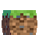

首页
游戏机制
冒险与探索
子冒险1
子冒险2
子冒险3
游戏设定
地精插件
多人游戏(计划中)
新手教程
切换主题(实验性)
关于作者

未登录
登录
登出
私信
NEWS!
【NEW Update!】MITE-ITN(Endless)B0.1.0版本发布
👍
0
⭐
0
作者：[陌良Ya] 发布时间：[暂定]
404~
404-
【材质】高版本（1.22）材质数据包
👍
0
⭐
0
作者：[陌良Ya] 发布时间：[2024.12.1]
For MITE-ITN(Endless)的1.22材质包，改头换面！
包位置：原文件夹
发表新帖(施工中...)
发表帖子
【爱发电】赞助作者
可以前往爱发电适当赞助作者
众所周知：缺乏资金会导致作品断更